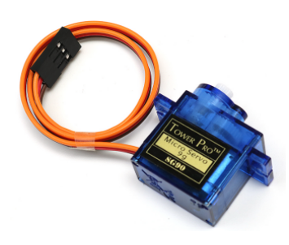

2.12 Servo¶
Overview¶
In this lesson, you will learn something about Servo. Servo is a kind of driver whose position (angular) can be adjustable and kept or a rotary actuator that allows for precise control of angular position. Currently, it is widely used in upscale remote control toys, such as airplane, submarine, telerobot and so on.
Components Required¶

Component Introduction¶
A servo is generally composed of the following parts: case, shaft, gear system, potentiometer, DC motor, and embedded board.
It works like this: The microcontroller sends out PWM signals to the servo, and then the embedded board in the servo receives the signals through the signal pin and controls the motor inside to turn. As a result, the motor drives the gear system and then motivates the shaft after deceleration. The shaft and potentiometer of the servo are connected together. When the shaft rotates, it drives the potentiometer, so the potentiometer outputs a voltage signal to the embedded board. Then the board determines the direction and speed of rotation based on the current position, so it can stop exactly at the right position as defined and hold there.

The angle is determined by the duration of a pulse that is applied to the control wire. This is called Pulse width Modulation. The servo expects to see a pulse every 20 ms. The length of the pulse will determine how far the motor turns. For example, a 1.5ms pulse will make the motor turn to the 90 degree position (neutral position).
When a pulse is sent to a servo that is less than 1.5 ms, the servo rotates to a position and holds its output shaft some number of degrees counterclockwise from the neutral point.
When the pulse is wider than 1.5 ms the opposite occurs. The minimal width and the maximum width of pulse that will command the servo to turn to a valid position are functions of each servo. Generally the minimum pulse will be about 0.5 ms wide and the maximum pulse will be 2.5 ms wide.

Fritzing Circuit¶
In this example, we use PWM pin 9 to drive the Servo, and get the orange wire of the servo connected to the PWM pin 9, the red one to 5V, and the brown one to GND.

Schematic Diagram¶

Code¶
Once you finish uploading the codes to the Mega2560 board, you can see the servo arm rotating in the range 0°~180°.
Code Analysis¶
By calling the library Servo.h, you can drive the servo easily.
#include <Servo.h>
Library Functions：
Servo
Create Servo object to control a servo.
uint8_t attach(int pin);
Turn a pin into a servo driver. Calls pinMode. Returns 0 on failure.
void detach();
Release a pin from servo driving.
void write(int value);
Set the angle of the servo in degrees, 0 to 180.
int read();
Return that value set with the last write().
bool attached();
Return 1 if the servo is currently attached.
Phenomenon Picture¶